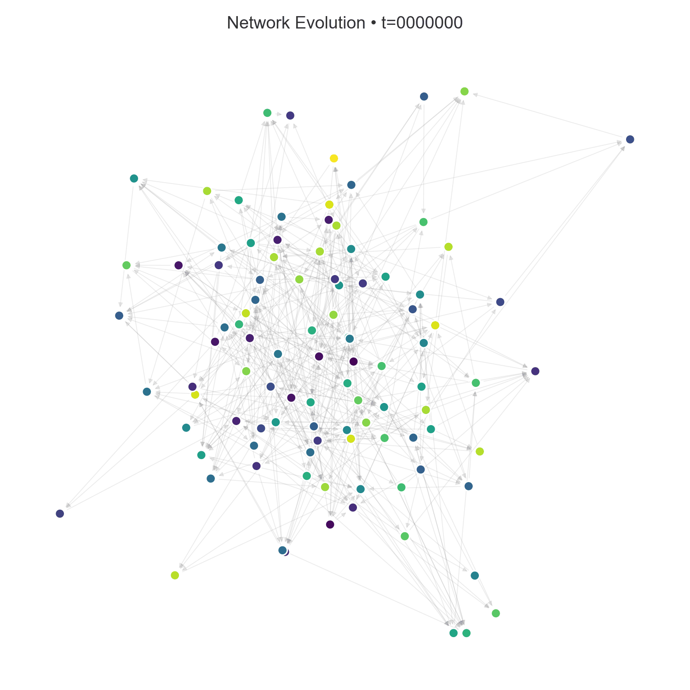
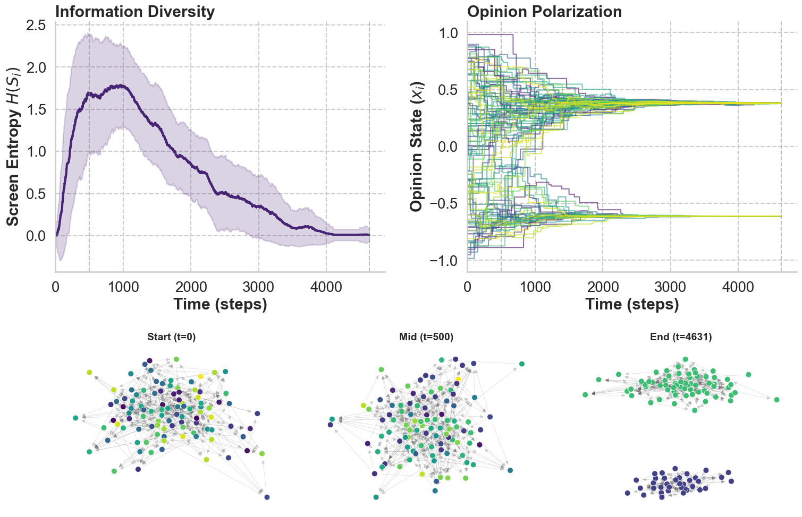
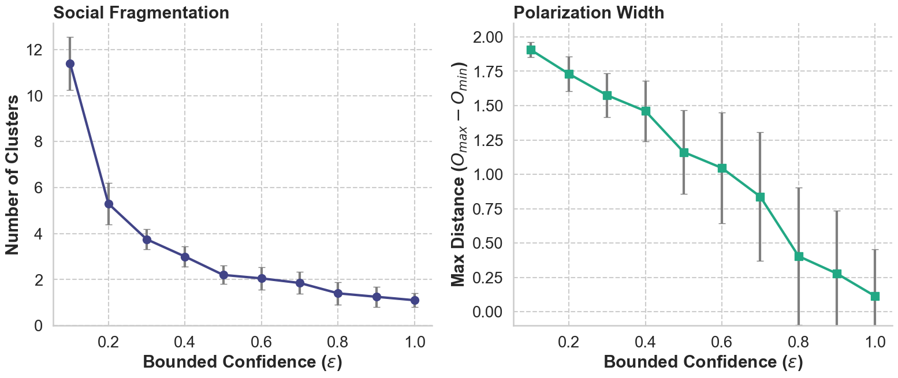
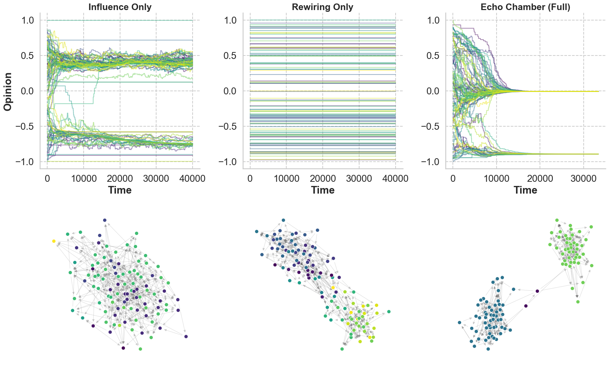
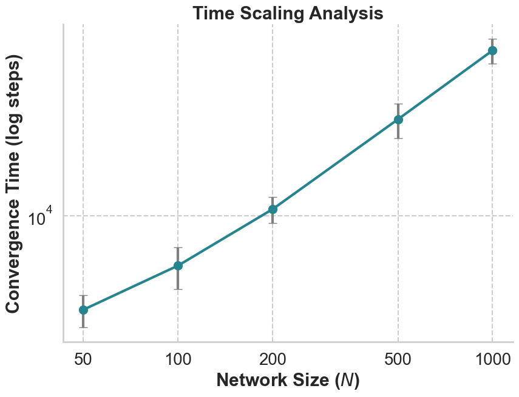
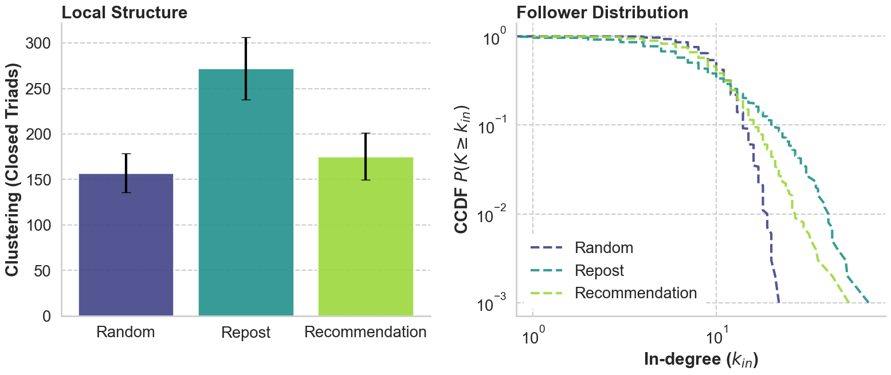
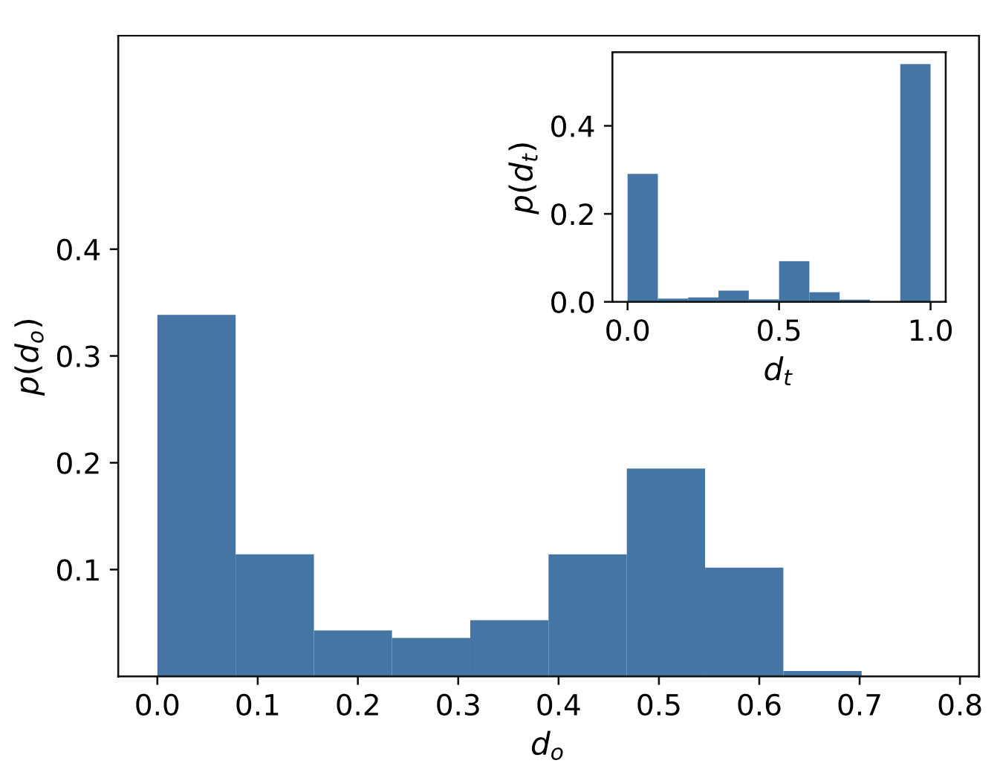
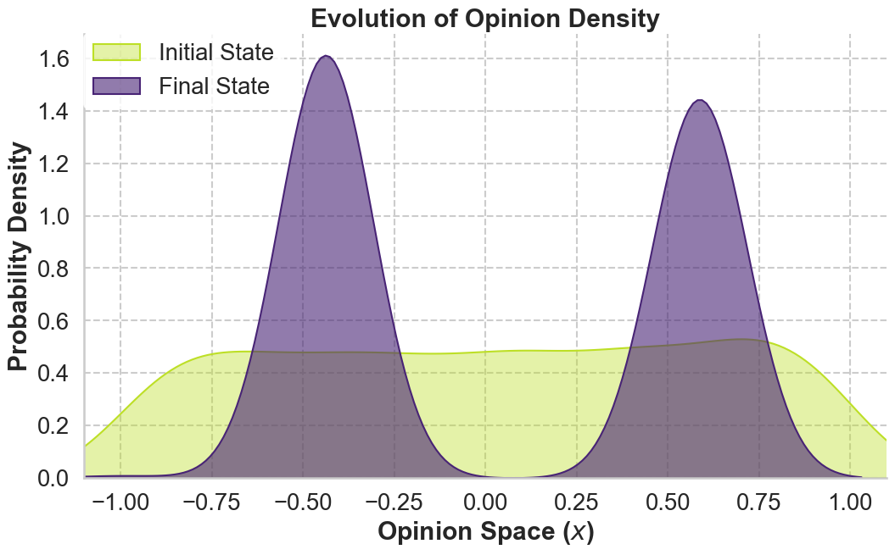

An Agent-Based model of the co-evolution of opinion
Polarization and topological Segregation.
Despite their potential for global connection, social media are empirically observed to favour segregated structures, leading to the formation of Echo Chambers
Physical fragmentation of the graph into disconnected clusters.
High intra-cluster homogeneity and maximal inter-cluster ideological distance.

Each agent $i$ holds a continuous opinion $o_i(t) \in [-1,+1]$ and a Screen $S_i(t)$, modelled as a FIFO queue of length $L$.
Unlike mean-field models, attention is limited.
Strength of social influence. Controls the speed of convergence.
Confidence threshold. Defines the agent's open-mindedness.
Heaviside filter: interaction happens only between compatible opinions.
Besides changing its opinion, the agent modifies the network and spreads information.
The agent picks a concordant message from its screen and reposts it. This mechanism mimics virality.
The agent creates new content based on its current opinion $o_i(t)$ (Innovation).
With probability $q$, the agent reacts to the cognitive dissonance generated by discordant messages.
Standard simulation: $N=100, \epsilon=0.4$
Three stages of symmetry breaking:



Analysis of the time $T_{crit}$ needed to reach the stationary state (complete segregation).
A minimal amount of rewiring ($q > 0.1$) and influence
($\mu > 0.1$) is enough to drastically cut the formation time of Echo Chambers.


The Repost and Recommendation strategies generate significantly more triads than the Random strategy.
The Repost mechanism produces heavy tails (Power Laws) in the in-degree distribution. Rich-get-Richer effect.
Validation on the US Politics Retweet Network (Conover et al., 2010).
Opinions are inferred from hashtag vectors $\vec{h}_i$. The distance is the usage overlap:
Measures the degree of segregation:
The model is calibrated and evolved until it reaches the same index $s$ as the real data. A Synthetic Retweet Network is then built for comparison.
The analysis of pairwise distances ($d_o = |o_i - o_j|$) reveals the deep nature of polarization: the system expels moderate opinions and collapses into two stable states.
The comparison with Twitter data confirms the qualitative validity: real data show the same non-trivial bimodal structure.


The plot shows the dramatic phase transition from a mixed state (Green) to a perfectly segregated state (Purple).
No complex cognitive biases or "fake news" are needed. The simple combination of Social Influence and Unfollowing is a sufficient condition to fragment society.
The system does not degrade linearly. The interplay between opinions and structure acts as a catalyst, accelerating the formation of Echo Chambers.
Recommender systems based on Triadic Closure ("friends of friends") increase local clustering, hermetically sealing information bubbles from within.
Social influence and unfollowing accelerate the emergence of echo chambers
Sasahara, K., Chen, W., Peng, H., Ciampaglia, G. L., Flammini, A., & Menczer, F. (2021). Journal of Computational Social Science, 4, 381-402.